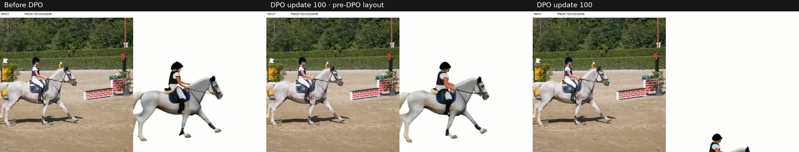

DPO · Update 100
Before and after DPO
Ten validation examples. Three views in one video.

Experiment viewer
Visual comparisons of FF4D training checkpoints, with synchronized playback.
DPO · Update 100
Ten validation examples. Three views in one video.
